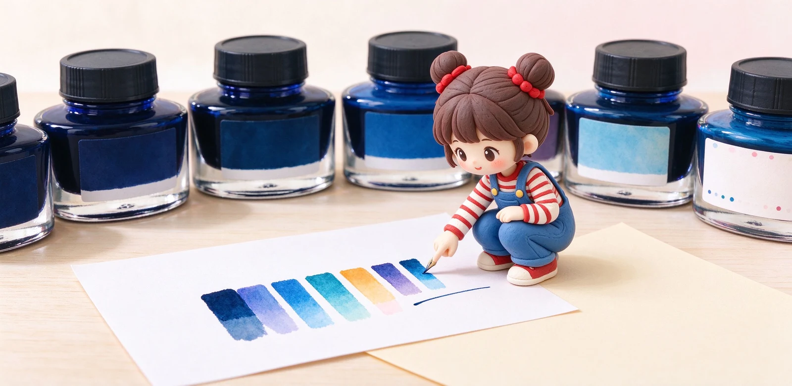

語意摘要：配色不是玄学，是先決定用途再決定色：長篇筆記選耐看的黑、藍黑或深藍；手帳與日記選一個你看了會開心的主色，再加一個點綴色。同一個顏色放在白紙、米黃紙、彩色貼紙上會差很多，下手前最好先試色或看真實試寫影片。與其收集十瓶差不多的藍，不如先配出「日常色＋裝飾色」的基本盤。
先別看色票，先問自己寫什麼
很多人選墨水是被色票燒到就下單，回家才發現：這色寫筆記太花、寫日記又太沉。正確順序是先決定「這瓶主要拿來寫什麼」，用途決定色調，而不是顏色決定用途。
長篇筆記、課堂重點、會議紀錄，需要連續看三十分鐘不累眼，就往黑、藍黑、深藍這類低飽和色靠；手帳、日記、給自己看的內容，才適合讓顏色出來說話。
實用配色三法則：主色、對比、同色系
不用去背色環，記三個簡單法則就夠搭得出好看的手帳：
| 法則 | 做法 | 舉例 |
|---|---|---|
| 一主色 | 九成頁面用同一色，整齊不亂 | 日常都用藍黑寫 |
| 一同色系 | 點綴色選主色的深或淺 | 深藍主色＋淺天藍標題 |
| 一互補點綴 | 小面積用對比色提神 | 藍色頁面點一點橘紅日期 |
關鍵在「面積」。主色佔絕大多數，對比色只敢用在日期、星號、重點標記那一點點，畫龍點睛。整頁一半紅一半藍，那就不是配色是吵鬧。

紙的顏色會改變墨水看起來的樣子
同一瓶墨，寫在純白紙上跟寫在米黃、奶油色的 MD 紙上，氣氛完全不同。冷色墨（藍、紫）在米黃紙上會被溫度中和，看起來更柔；暖色墨（棕、橘）在冷白紙上更跳。
所以選墨前最好知道自己主要寫在哪種本子。拿不準時，看別人在「跟你同一款紙」上的試色，比看官方色票準。色票通常打在最好看的紙上，跟你的本子可能差一截。
鋼筆跟墨水也要搭：筆身會不會搶戲
很多人忽略：筆的顏色也在畫面裡。透明示範筆會露出墨水本色，搭什麼墨都清楚；深色筆桿（黑、深藍、酒紅）則適合配乾淨的墨色，別讓筆跟墨各自搶鋒頭。
一個實用原則：筆身花（透明示范、漸層、有圖樣）就配素色墨，筆身素就可以配有 shading、sheen 的表現墨，讓焦點集中在一處。
給新手的「最小收藏」配色建議
如果你不想一開始就陷入收十瓶的循環，照這個基本盤搭：
- 一瓶黑或藍黑：寫筆記、寫正事，最耐看。
- 一瓶深藍或藍：手帳主色，幾乎萬用不膩。
- 一瓶你一看就心動的彩色：粉、紫、墨綠都行，當點綴。
- 之後再依季節與心情，用小容量補限定色。
常見問題 FAQ
日常寫筆記選什麼墨水顏色最耐看？
手帳墨水怎麼配色才不會亂？
為什麼墨水寫在本子上跟色票不一樣？
筆身顏色要跟墨水配嗎？
新手最少要準備幾瓶墨水？
資料來源與核實依據
- Pilot Iroshizuku 全系列一覽與色彩介紹（Follow My Pen）
- Best Fountain Pen Inks：Kon-peki 深藍 shading 表現（The Pen Archive）
- Understanding Ink Properties（紙張吸收度影響顏色表現）（Ink Palette）
相關文章推薦

墨水 shading、sheen、shimmer 是什麼？挑出隨筆觸變化的好看墨水
shading 是一筆內的深淺層次，sheen 是乾後邊緣閃出的金屬光，shimmer 是浮在表面的亮粉；想要效果，要配濕筆尖與不吸水的紙。

鋼筆墨水怎麼選？染料、顏料、防水墨水差別與新手入門
新手第一瓶墨水，九成情況選「水性染料墨水」就對了：顏色飽滿、不傷筆、好清洗；顏料跟防水墨水是畫圖、要防潑水才需要的進階款。

子彈筆記怎麼開始？手帳新手的符號、清單與月週計畫實作
子彈筆記的本體是一套符號速記法，不是華麗的畫面：任務寫一個點、事件畫個圈、想法用破折號，三個符號就能把一天記完。